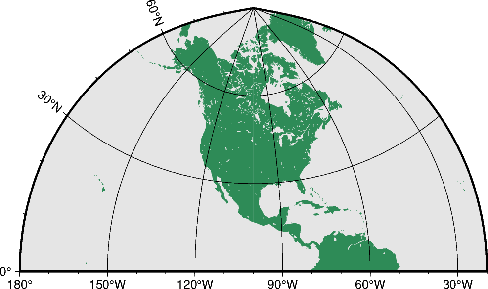

备注
Go to the end to download the full example code.
Polyconic projection
The polyconic projection, in Europe usually referred to as the American polyconic projection, was introduced shortly before 1820 by the Swiss-American cartographer Ferdinand Rodulph Hassler (1770-1843). As head of the Survey of the Coast, he was looking for a projection that would give the least distortion for mapping the coast of the United States. The projection acquired its name from the construction of each parallel, which is achieved by projecting the parallel onto the cone while it is rolled around the globe, along the central meridian, tangent to that parallel. As a consequence, the projection involves many cones rather than a single one used in regular conic projections.
The polyconic projection is neither equal-area, nor conformal. It is true to scale without distortion along the central meridian. Each parallel is true to scale as well, but the meridians are not as they get further away from the central meridian. As a consequence, no parallel is standard because conformity is lost with the lengthening of the meridians.
poly/[lon0/[lat0/]]scale or Poly/[lon0/[lat0/]]width
The projection is set with poly or Poly. The figure size is set with scale or width.

Total running time of the script: (0 minutes 0.128 seconds)